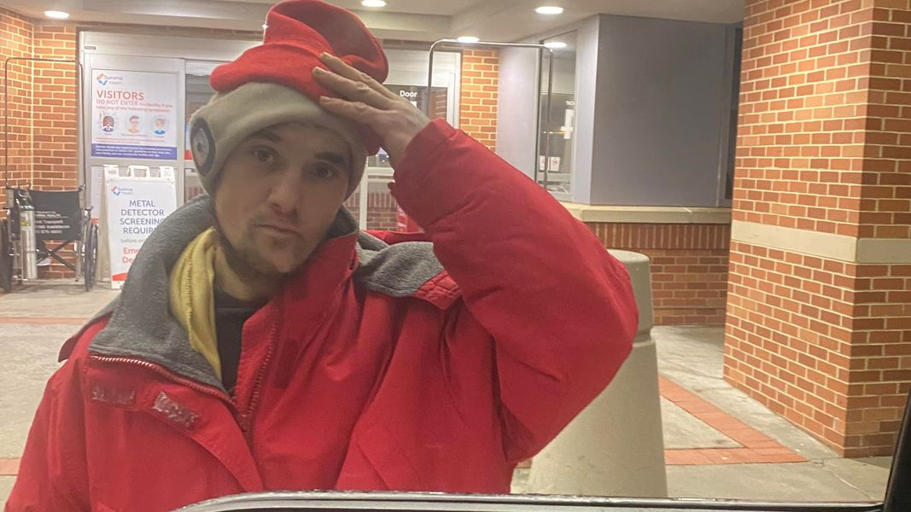

Mobile uploads
This is Joe.
He’s the person we were talking about yesterday.
He has been badly beat up, was dopesick and wanted to detox off of fentanyl.
You all jumped right on ways to help him. It turns out that you can go to ADM or Akron City Hospital pretty much any time. I drove him to city hospital at 6pm on Sunday, New Year’s Eve.
He was SO nervous. “If only I could have had one last big hurrah before I went in.”
“If only I could have one more cigarette.”
“Do you think they’ll take me even though I’m homeless, have no ID, and have warrants?”
“I used this morning. Do you think they’ll know not to give me Suboxone for at least 24 hours?”
His nervousness was palpable. I could feel it so strongly.
But he got in my truck. We drove to City Hospital. And he went in the emergency room. That’s some of the bravest work I’ve seen in a long time.
I am not the “quit drugs” guy. I understand exactly why these people use drugs and keep using drugs. I get it. Plus, it’s none of my business how someone chooses to live their own life. I have enough problems trying to run my own life. But if a person wants to quit their drug of choice I’m happy to help.
I learned that the reason he got beat up, which he said was the worst beating of his life, was because he stole from a fellow gang member. He stole someone’s purse. I support that kind of steet justice, honestly. Stealing from your neighbors undermines the entire community. I hate it so much.
Plus, I think this beating pushed him over the edge. He said he wanted to detox because he’s sick of this life. He’s been enslaved to fentanyl for 13 years. I’ve never seen a drug completely steal someone’s entire mind, body and spirit like fentanyl does. It’s truly unbelievable.
But I’ve also seen a lot of people quit it. In fact, if they don’t die, everyone eventually stops it. It’s just too insane of a life. Time is the antidote to fentanyl. A person just needs enough time to get to the place where they can’t take it one more day.
Maybe today is the day for Joe.
Thank you all for your amazing help.